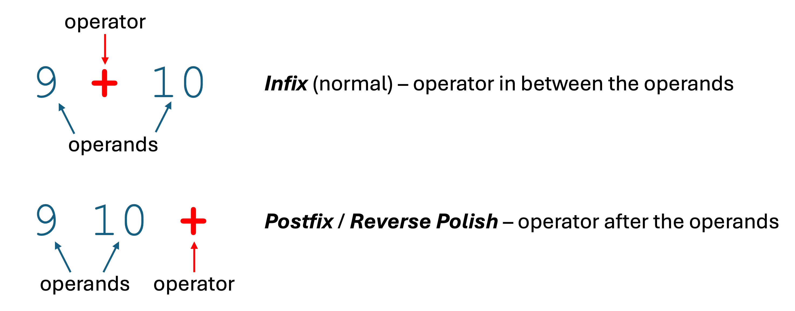
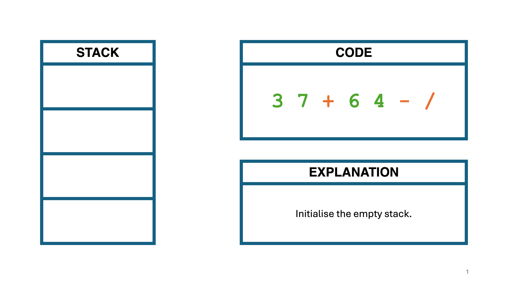
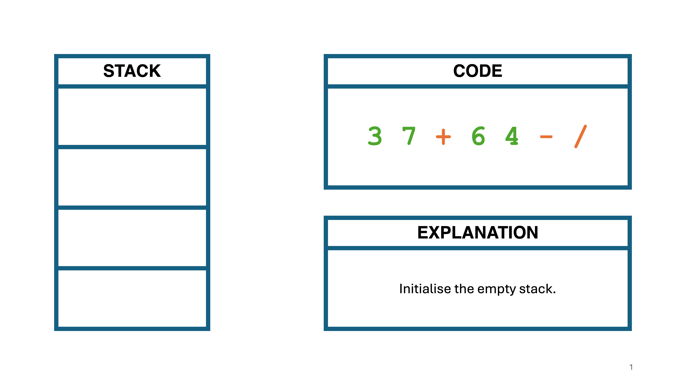

GCSE Link: None
 Reverse Polish Notation is an alternative way of writing mathematical expressions, where the operator goes after the operands.
Reverse Polish Notation is an alternative way of writing mathematical expressions, where the operator goes after the operands.
Diagram 1 shows how the expression 9 + 10 can be converted to Reverse Polish Notation.
 Diagram 1
Diagram 1

But why use Reverse Polish Notation? Consider the infix expression
(3 + 7) / (6 -
4). In RPN, the parentheses are never required, as the order
of operations can be inferred by the order of operators in the expression: 3
7 + 6 4 - /.
Also, Reverse Polish Notation can be easily evaluated by stack-based interpreters.
Diagram 2 shows how the RPN expression
3 7 + 6
4 - /
could be evaluated by a stack-based interpreter.
 Diagram 2
Diagram 2
 


Examples of interpreters that use RPN include Postscript, the Java Virtual Machine (to run bytecode),
and Thunno 2.
 Convert the RPN expression
Convert the RPN expression 7 4 - 15 8 + * to infix and evaluate the result.
(7 - 4) * (15 + 8)
(answer is 69).